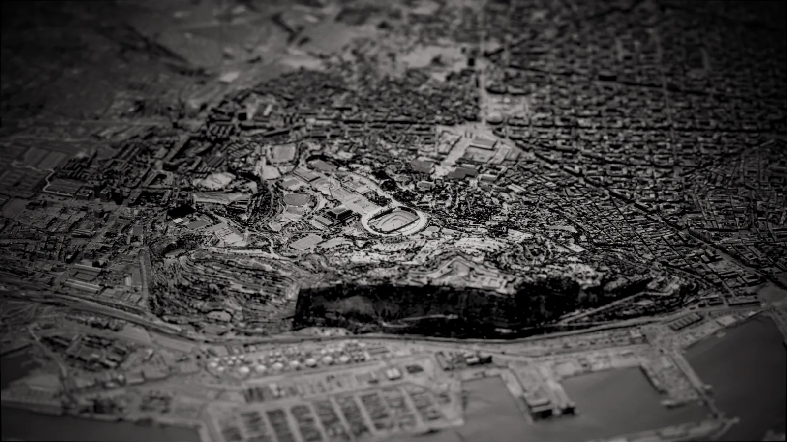
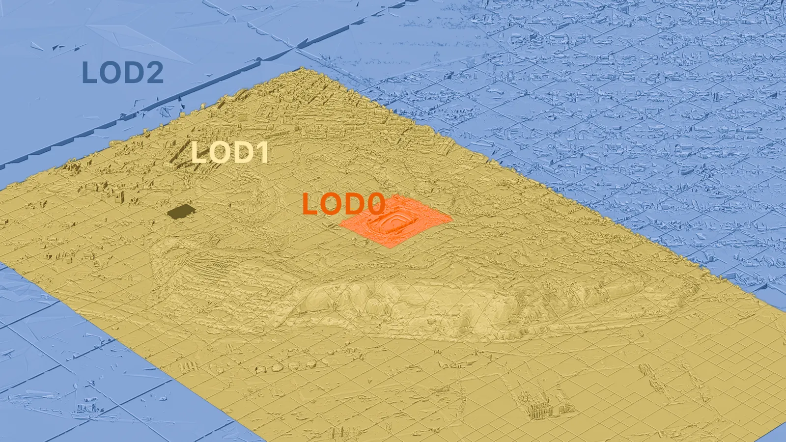
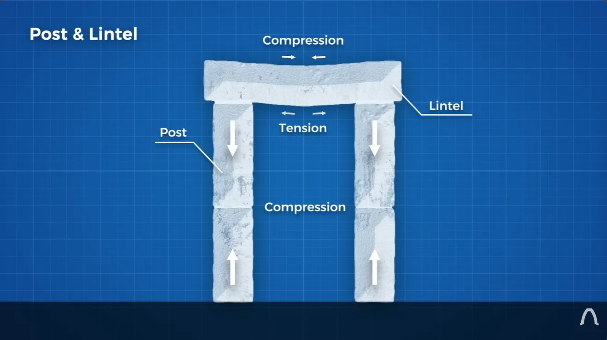
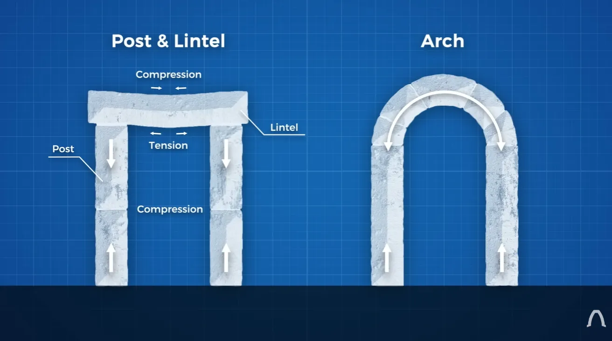
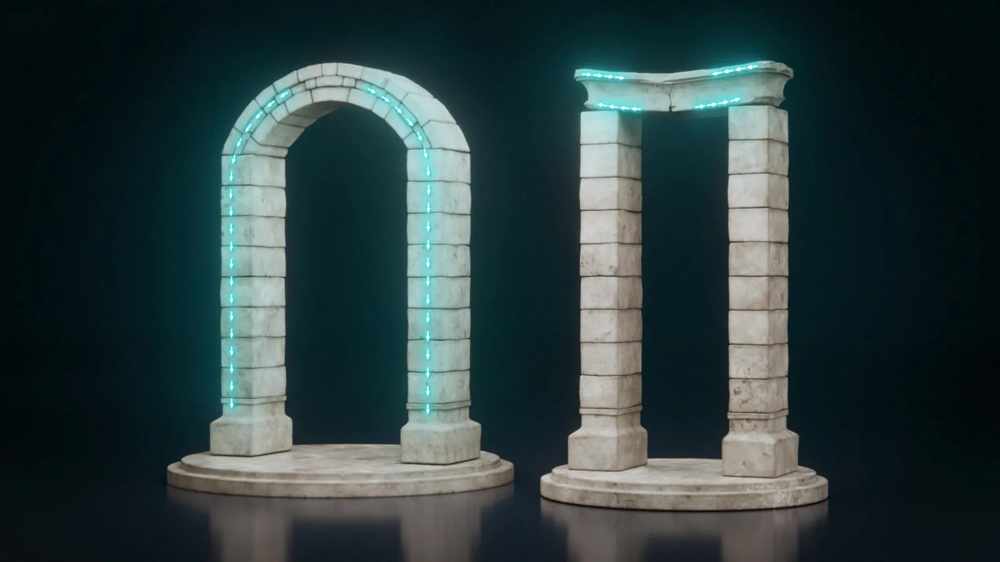
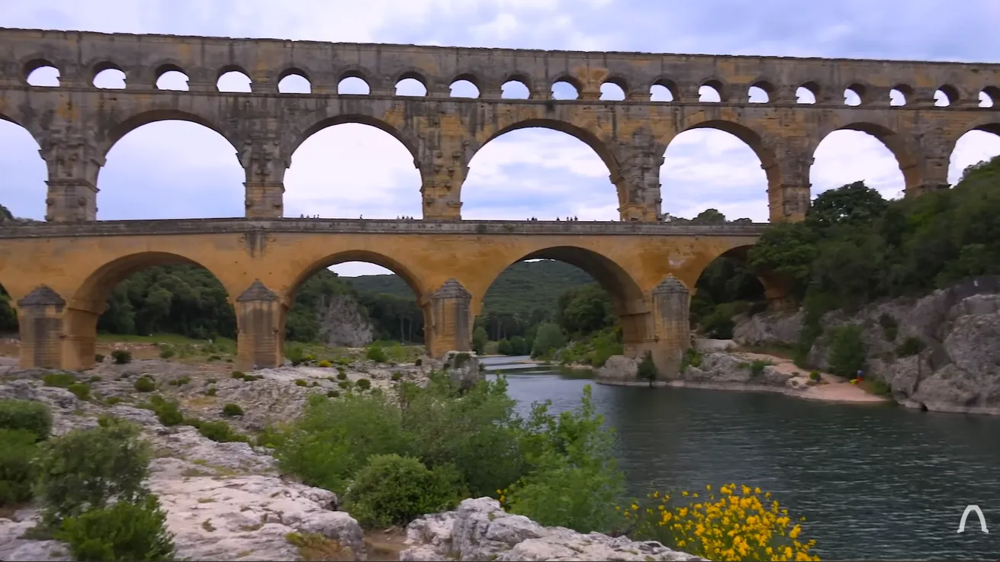
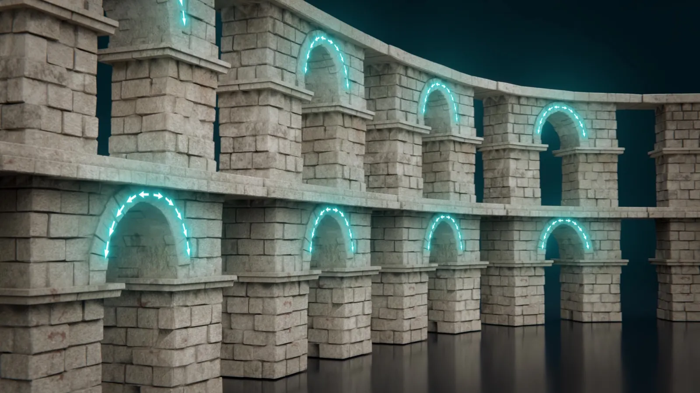
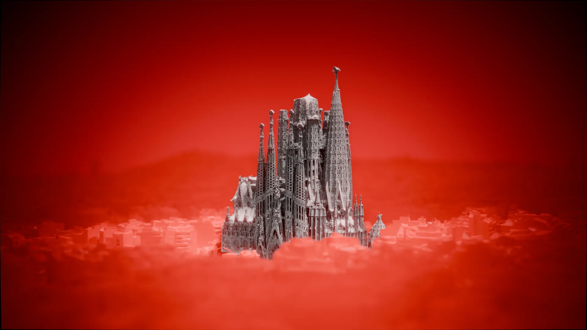
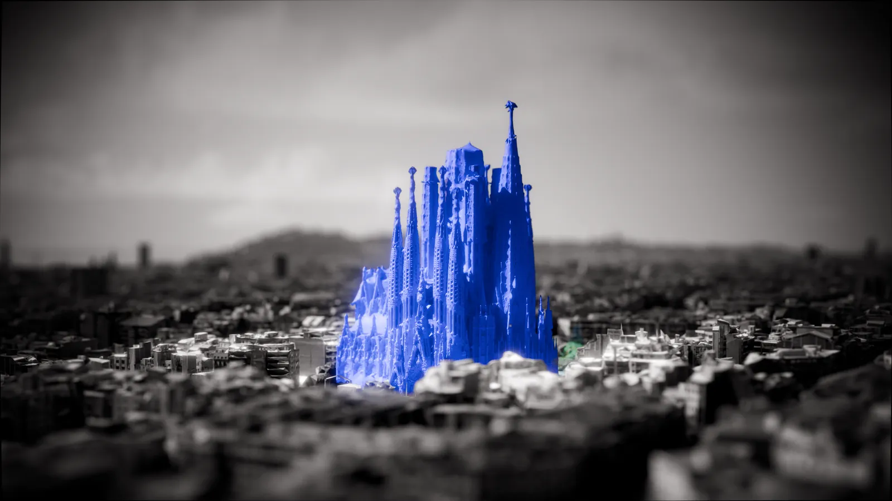

01
Project
Sagrada Familia
Purpose
Tell the 150-year story behind the construction of the tallest church in the world.
My Role
3D Artist
Scope
5 minutes of animation, 8+ environments, under 1 month
Result
24 minute documentary with 450k views on YouTube.
Technique
Levels of Detail
I imported map data of Barcelona with different levels of detail based on the distance from the camera.


Process
Updating the Animation Style
I remade these 10 year old animations in a modern 3D style. Same concept, higher production value.





02
Bag Simulations
03
Projector Scene
04
Thumbnail Studies


